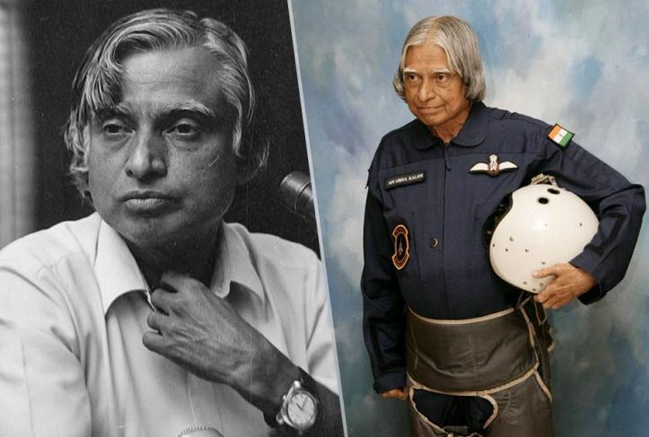
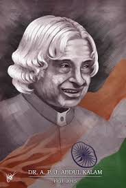
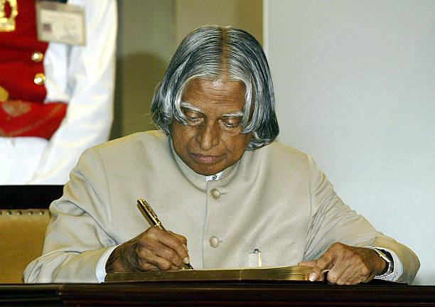
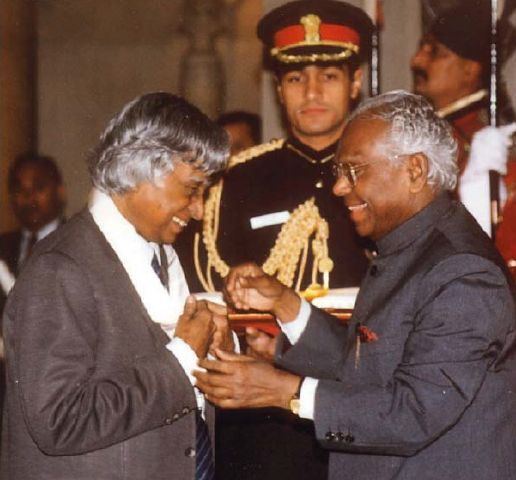

Avul Pakir Jainulabdeen Abdul Kalam
(From Missile Man to People's President)
In this tribute page, we celebrate the life and accomplishments of Dr. APJ Abdul Kalam,
paying homage to his invaluable contributions to science, education,
and the progress of India and remembering him as a visionary leader,
a remarkable scientist, and a source of inspiration for countless individuals..
Introduction
Dr. A.P.J. Abdul Kalam was born October 15, 1931, Rameswaram, India—died July 27, 2015, Shillong. His birth anniversary is observed as World Students' Day. He was the President of India from 2002 to 2007.
He was honored with several prestigious awards including India's highest civilian honour "Bharat Ratna" in 1997.
He was born in Dhanushkodi, Rameswaram, Tamil Nadu, and studied physics and aerospace engineering.
Early Life and Education

Birthplace and Family Background: Dr. Kalam was born in Rameswaram, a small coastal town in Tamil Nadu, to a modest Tamil Muslim family. His father, Jainulabdeen, was a boat owner and imam of a local mosque, while his mother, Ashiamma, was a homemaker. Growing up in a close-knit family, Dr. Kalam imbibed values of simplicity, hard work, and faith from his parents.
Educational Journey: Dr. Kalam's thirst for knowledge was evident from a young age. He completed his schooling at the Schwartz Higher Secondary School in Ramanathapuram, Tamil Nadu, where he was known for his curiosity and dedication to learning.
In his formative years, Dr. Kalam's strong interest in science and aeronautics started taking shape.
He was greatly influenced by his teachers and mentors who recognized his potential and encouraged him to pursue his dreams. One notable figure who played a significant role in his life was his high school physics teacher, Siva Subramania Iyer, who ignited his passion for science and instilled in him a sense of purpose.
Dr. Kalam went on to enroll at St. Joseph's College, Tiruchirappalli, where he pursued a degree in Physics.
During this time, he actively participated in various scientific societies and gained practical knowledge by conducting experiments and building small models. His academic excellence and thirst for knowledge earned him the admiration and respect of his professors and peers.
After completing his undergraduate studies, Dr. Kalam pursued further education at the Madras Institute of Technology (MIT) in Chennai. He specialized in Aeronautical Engineering, which laid the foundation for his future contributions to India's aerospace and defense sectors.
Scientific career

During his time at MIT, Dr. Kalam had the opportunity to work with renowned scientists and engineers,
which further fueled his passion for aeronautics and propelled him towards his notable achievements.
One of his influential mentors was Dr. Vikram Sarabhai, the renowned physicist and the father of
India's space program. Dr. Sarabhai recognized Dr. Kalam's talent and invited him to join the Indian
Space Research Organization (ISRO), where he made significant contributions to India's space technology.
Dr. Kalam's association with India's missile program began in the early 1970s when he joined the Defence
Research and Development Laboratory (DRDL) in Hyderabad. He played a key role in the development of
India's Integrated Guided Missile Development Program (IGMDP), which aimed to design and develop a range
of missiles for various defense purposes.As the chief architect of IGMDP, Dr. Kalam spearheaded the
development of strategic and tactical missiles, including the Agni series, Prithvi, Akash, and Trishul.
His contributions were instrumental in establishing India's self-reliance in missile technology and
strengthening the country's defense capabilities.Under Dr. Kalam's leadership, India successfully
conducted the test flights of Agni and Prithvi missiles, demonstrating their capabilities and bolstering
India's deterrence power. These achievements marked significant milestones in India's missile program
and positioned the country as a credible player in the global defense arena.
Role in Pokhran-II Nuclear Tests: Dr. Kalam played a crucial role in the Pokhran-II nuclear
tests conducted in May 1998. As the Chief Scientific Adviser to the Prime Minister and the head
of the Indian nuclear weapons program, he provided valuable technical expertise and guidance
during the planning and execution of the tests. The successful tests solidified India's position
as a nuclear-armed nation and demonstrated its technological prowess.Work with DRDO:
Dr. Kalam's association with the Defence Research and Development Organization (DRDO)
spanned several decades, and he made significant contributions to the organization's
research and development efforts. He served as the Director of DRDL and later became
the Chief Executive of DRDO. During his tenure, he focused on enhancing research and
development capabilities, promoting indigenous technologies, and fostering collaborations
with national and international partners.Dr. Kalam's visionary leadership and commitment
to innovation paved the way for several breakthroughs in defense technology.
He championed the concept of "technology spin-offs" wherein defense technologies
were adapted for civilian applications, leading to advancements in sectors such as
healthcare, agriculture, and communicationDr. Kalam's early achievements include
his involvement in the development of India's first indigenous Satellite Launch
Vehicle (SLV-III) and the successful launch of the Rohini satellite into space in 1980.
These accomplishments marked important milestones in India's space exploration journey
and established Dr. Kalam as a prominent scientist in the country.His formative years
were also shaped by his deep-rooted spiritual beliefs and his close association with
the renowned spiritual leader, Swami Sivananda. Dr. Kalam
often attributed his success to the values of spirituality and righteousness that he imbibed from Swami Sivananda.
Presidency

Dr. Kalam's presidency, from 2002 to 2007, was characterized by his deep commitment to the welfare of the nation.As the President, Dr. Kalam actively engaged with the public and initiated various campaigns and programs aimed at transforming India.
Some of the notable initiatives he spearheaded include:
-
1. PURA (Providing Urban Amenities in Rural Areas): Dr. Kalam advocated for the PURA concept, which aimed to provide basic amenities and infrastructure in rural areas, bridging the urban-rural divide and promoting equitable development.
- 2. Providing Vision for Youth: Dr. Kalam was deeply passionate about empowering the youth and nurturing their talents. He interacted extensively with students, encouraging them to dream big, pursue excellence, and contribute to the nation's growth. He often referred to them as the "dreamers and doers" who would shape the future of India.
-
3. 2020: A Vision for the New Millennium: Dr. Kalam presented a roadmap for India's development in his book titled "India 2020." The vision outlined strategies and goals for achieving economic, social, and technological advancements, with a particular focus on eradicating poverty, ensuring education for all, and fostering sustainable development
Dr. Kalam's presidency was marked by his ability to connect with people from all walks of life and inspire them through his humility, wisdom, and dedication.
He acted as a bridge between the government and the citizens, promoting dialogue, inclusivity, and participatory governance
Books and writings

He was the writer of various motivational books like "India 2010", "Touched off Minds",
"Mission India", "The Luminous Sparks", "Wings of Fire", and "Moving Thoughts".
His life, work, and convictions are loaded up with models and motivations. He will keep on
inspiring us for eternity. Furthermore, this is the genuine justification for why individuals
from every one of the segments of the general public precipitously show love for this incredible
person on his miserable end at IIM Shillong on 27th July 2015.
May this Noble and faithful Soul find happiness in the hereafter!
Awards

- Bharat Ratna
- Padma Vibhushan
- Padma Bhushan
- Veer Savarkar Award
- Ramanujan Award
- Hoover Medal
- King Charles II Medal
- International von Kármán Wings Award
These are just a few of the numerous awards and accolades received by Dr. APJ Abdul Kalam during his lifetime.
His remarkable achievements and dedication to science, technology, and national development
continue to inspire people around the world.
Legacy and impact

Dr. Kalam's speeches, writings, and public engagements resonated with people across generations,
transcending cultural, social, and economic barriers. He played a crucial role in fostering national
unity, emphasizing the shared values, aspirations, and potential of the diverse population of India
.Dr. APJ Abdul Kalam's presidency left an indelible impact on the collective consciousness of the nation.
His vision, initiatives, and leadership continue to inspire generations of Indians to strive for
excellence, contribute to the nation's growth, and uphold the values of knowledge, integrity,
and inclusivity.As a unifying figure, Dr. Kalam brought together people from different backgrounds,
fostering a sense of pride, unity, and hope for a better future. His presidency marked a period of
renewed enthusiasm and aspiration for a developed and prosperous India.Dr. APJ Abdul Kalam's
term as the President of India showcased his unwavering commitment to the nation's progress,
his ability to inspire and unite people, and his vision for a prosperous and inclusive India.
His legacy as the "People's President" and his contributions to the nation's growth continue
to inspire millions, leaving an indelible mark on India's history.